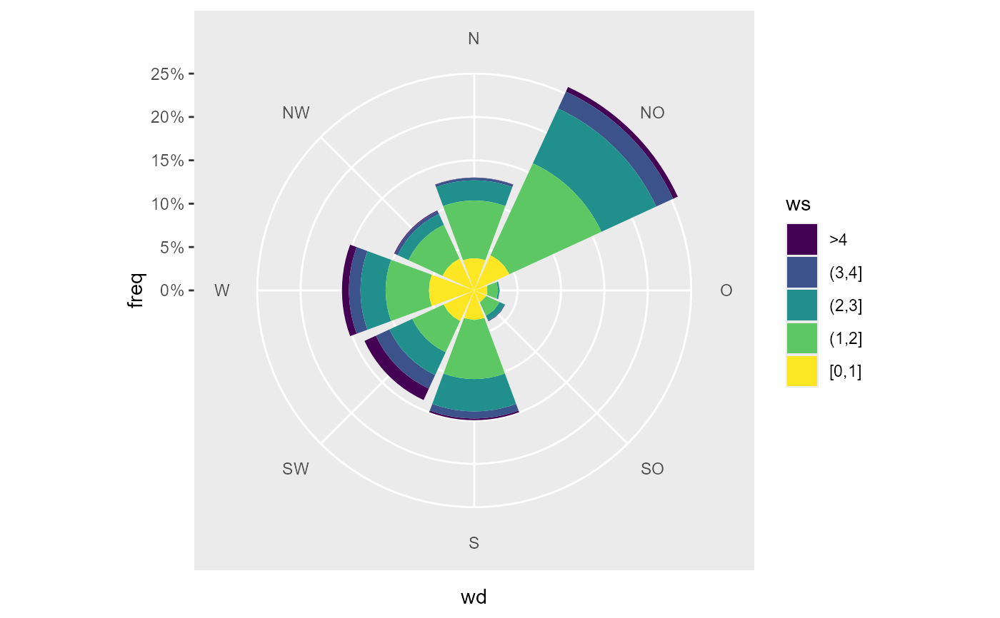

this themes are used in the respective gg wrapper to apply some basic theming.
theme_rop_traj(base = ggplot2::theme_minimal()) theme_rop_polarplot(base = ggplot2::theme_minimal()) theme_rop_radar(base = ggplot2::theme_minimal()) theme_rop_windrose(base = ggplot2::theme_minimal())
Arguments
| base | a ggplot2 theme. see ggplot2::ggtheme |
|---|
Examples
library(ggplot2) fn <- rOstluft.data::f("Zch_Stampfenbachstrasse_2010-2014.csv") data <- rOstluft::read_airmo_csv(fn) data <- rOstluft::rolf_to_openair(data) data <- dplyr::mutate(data, year = lubridate::year(date)) data_summarized <- summary_wind(data, ws, wd, ws, ws_cutfun = cut_ws.fun(ws_max = 4, reverse = TRUE) ) p <- ggplot(data_summarized, aes(x = wd, y = freq, fill = ws)) + geom_bar(stat = "identity") + coord_polar2(start = - 22.5 / 180 * pi ) + scale_y_continuous( limits = c(0, NA), expand = c(0,0, 0, 0), labels = scales::percent ) + scale_fill_viridis_d() # default appearance p# with rOstluft theming for a windrose p + theme_rop_windrose()# prefer bw as base and a bigger font for a presentation p + theme_rop_windrose( theme_bw(base_size = 14) )